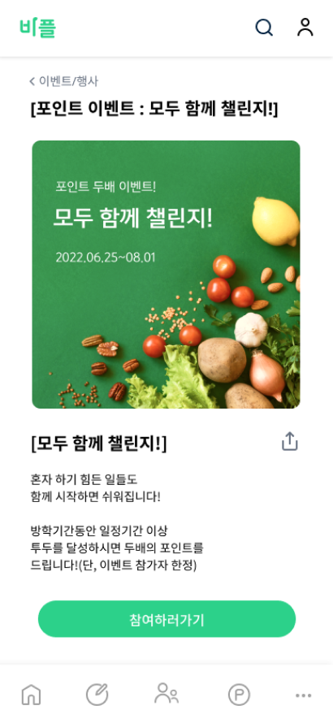
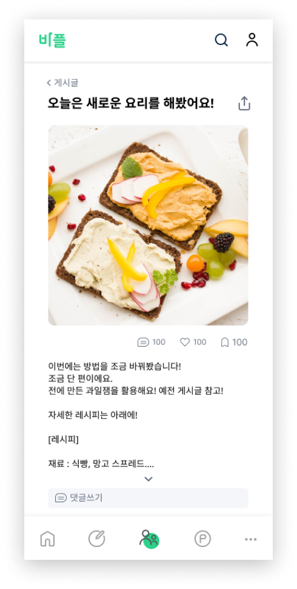
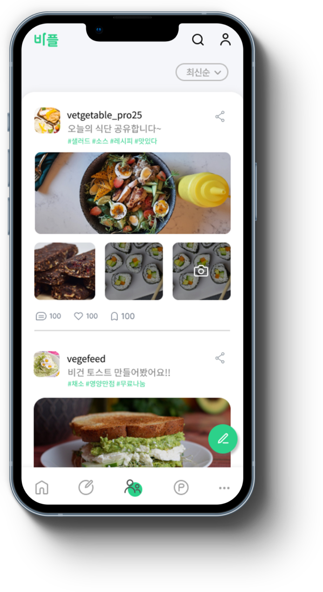
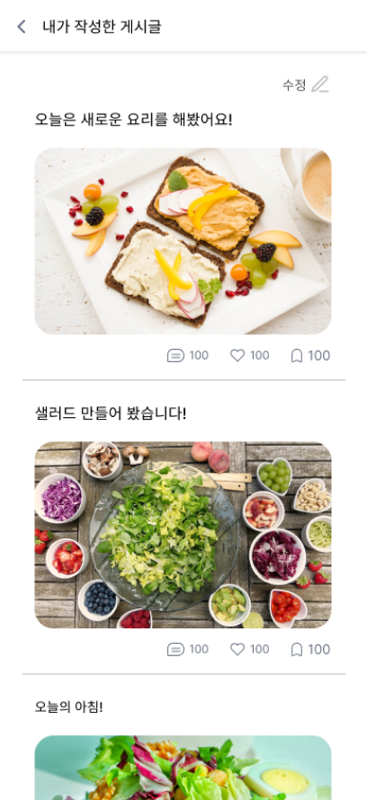
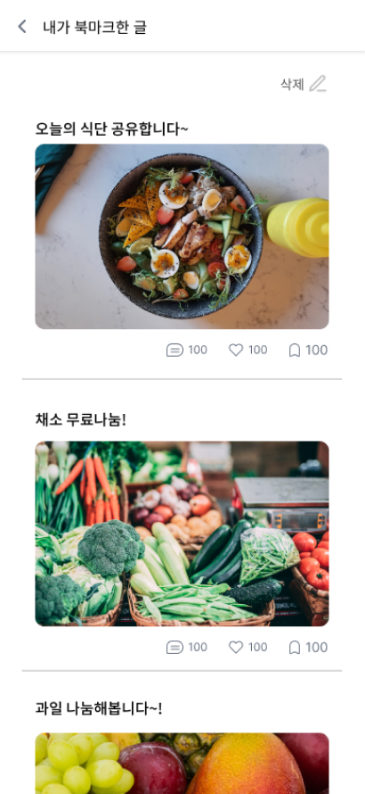

Overview
진단테스트로 나의 비건 성향에 대해 알아보자!
투두리스트로 비건을 실천하고,
정보를 공유하며 소통할 수 있어요.
이 모든 서비스를 경험하며 편한 비건 생활을 즐겨보세요.

진단테스트로 나의 비건 성향에 대해 알아보자!
투두리스트로 비건을 실천하고,
정보를 공유하며 소통할 수 있어요.
이 모든 서비스를 경험하며 편한 비건 생활을 즐겨보세요.

전체적으로 푸릇푸릇하고 시원한 비주얼을 컨셉으로하여 부드러운 화이트톤으로 안정감 있어 보이게 했습니다. 시원한 녹색과 남색을 포인트 컬러로 사용했습니다.
생기있는
친근한
부드러운
비건 어떻게 시작하지?
Noto Sans로 가독성이 높은 서체로 전체 본문에 사용하였습니다.

다양한 이벤트를 함께 참여하며, 서로 공유하고 즐길 수 있어요! 물론, 자랑도 할 수 있답니다.
인기글, 최신순 등 다양한 순서로 글을 확인할 수 있고, SNS로 쉽게 공유할 수도 있습니다!
    진단테스트로 나의 비건 성향에 대해 알고 입문! 투두리스트를 하며 채식을 실천해보자! 커뮤니티로 사람들과 정보를 공유하고 소통하며 포인트를 모으고 혜택을 받다 보면, 당신은 비건!